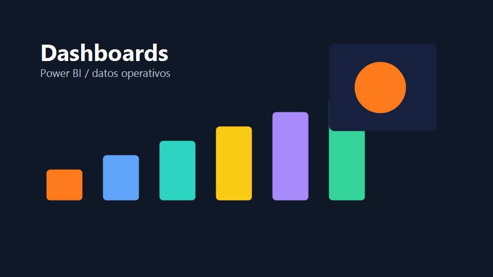

Tableros ejecutivos
Resumenes para direccion: KPIs principales, variaciones, tendencias y alertas visuales.
Datos y reporteria
Tableros para convertir datos operativos en lectura ejecutiva y seguimiento diario.

Dashboards de Power BI o reporteria web para revisar productividad, tiempos, costos, ventas, atencion, inventario, cumplimiento o indicadores definidos por el negocio.
Resumenes para direccion: KPIs principales, variaciones, tendencias y alertas visuales.
Seguimiento por area, turno, servicio, usuario, fecha o estado para tomar decisiones rapidas.
Cuando hay datos sensibles, el portafolio puede mostrar capturas anonimizadas o mockups.
Para publicar dashboards reales aqui, conviene preparar capturas sin nombres de clientes, cedulas, correos, telefonos, ventas sensibles o cualquier dato interno. Tambien podemos crear mockups representativos si no se puede mostrar la informacion original.